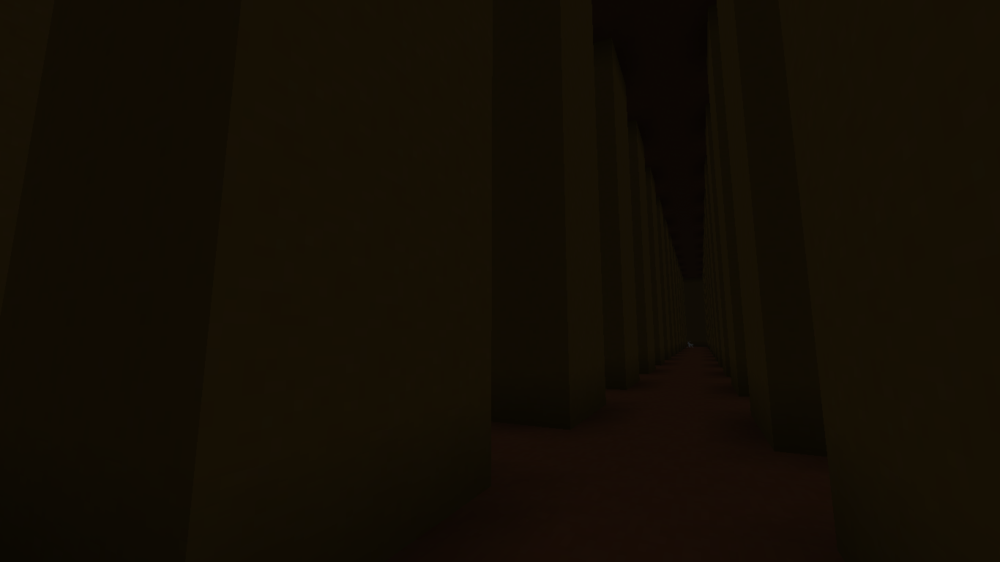

BACKROOMS 0.1
Descripción del mapa. Este mapa es de la versión 26.2. Es la primera versión de los Backrooms.
DescargarExplorá y descargá mapas creados para tus juegos. Elegí uno para ver su información y descargarlo.
Seleccioná un mapa para descargarlo.

Descripción del mapa. Este mapa es de la versión 26.2. Es la primera versión de los Backrooms.
Descargar